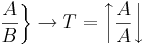

De: La Frikipedia, la enciclopedia extremadamente seria.
De: La Frikipedia, la enciclopedia extremadamente seria. De: La Frikipedia, la enciclopedia extremadamente seria.
| De la serie Leyes Físicas: | |||
| Ley del Boing-boing | |||
| |||
| Ley creada por: | Isaac Newton | ||
| Nombre completo: | Ley del necrosiviramiento boing-boingnano | ||
| Año de creación: | 1688 | ||
| Numero de leyes sobre el mismo tema: | 3 hasta ahora | ||
| Efecto que causa la ley: | Muestra el movimiento de masa arriba y abajo | ||
«Creó que esta ley tambien causa "levantamiento incondisional de partes masculinas"»
~ Isaac Newton poniendo otra ley en cuestion mientras observa esa.
«Arriba... abajo... arriba... abajo...»
~ Issac Newton siguiendo la ley paso a paso.
La ley del boing-boing tambien conocida como Ley arriba y abajo o la ley de la exitación masculina, fue creada por la esposa del científico Isaac Newton e investigada por Isaac en 1688 mientras estaba descansando intencionalmente en un bar cerca de su casa en Houston(Europa), mientras el caminaba camino a casa vio a una chica corriendo y ahi fue donde se dio cuenta, que no traia pantalones... mientras la chica se reia de él.
Pero recordando todo lo ocurrido esa noche se puso a pensar y ahi fue donde encontro que "si un cuerpo hace un movimiento hacia arriba y hacia abajo todas las membranas mamarias pluricelulares femenistas lo acompañaran intencionalemente".
Asi mismo esta ley newtoniana permite explicar el claro ejemplo de gravitación que poseen los cuerpos humanos (y los no humanos) que muestra que la masa se atrae con el movimiento del cuerpo en cuestión.
El primer concepto que maneja es el de masa, que identifica con "cantidad de materia tetal"; la importancia de esta precisión está en que le permite prescindir de toda cualidad que no sea física-matemática o Física-corporaltica, a la hora de tratar la dinámica de los cuerpos. Con todo, utiliza la idea de éter para poder mecanizar todo aquello no reducible a su concepto de masa.
La primera ley del movimiento rebate la idea aristotélica que dice que el efecto del boing-boing solo se puede mantener en movimiento si se mueve el cuerpo constantemente o de lo contrario la masa que atrae el cuerpo estara completamente inerte.
Formula que ejemplifica la primera ley:

Formatos:
A = Arriba
B = Abajo
T = Tetas
Explicación: Si las Tetas suben y bajan en repetidas ocaciones y con la misma potencia se podra obtener el efecto Boing-boing infinito o caerán en un punto de Anti-inercia que se puede referir a el efecto "Boing-boing" no infinito o Infinititivo.
Esta ley explica que la fuerza tiene que ser clara y consisa si se quiere obtener susodicho efecto, ya que hay que ponerle muchos huevos y fuerza para que el efecto quede como debería y como newton lo descubrio...
"el cambio de movimiento es proporcional a la fuerza de desplazamiento corporal invertido e impresa y ocurre según la línea recta a lo largo de la cual aquella fuerza se imprime"
este principio supone que por cada fuerza que actua sobre el cuerpo completo las tetas realizan una fuerza de igual intensidad, pero de sentido contrario.
ejemplo:es decir que salto para arriba mis tetas iran hacia abajo y al regresar a abajo mi cuerpo, mis tetas se iran arriba con fuerza similar a como baja mi cuerpo.
Autor(es):